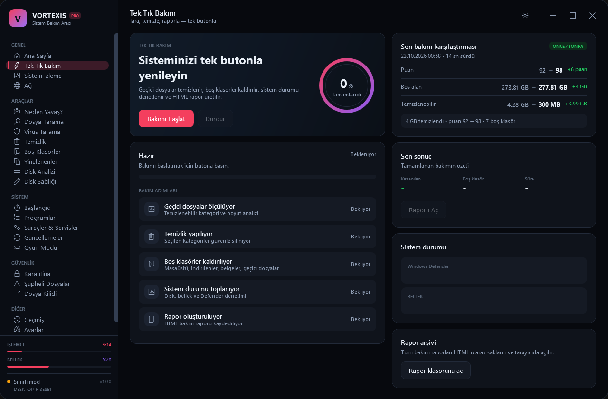
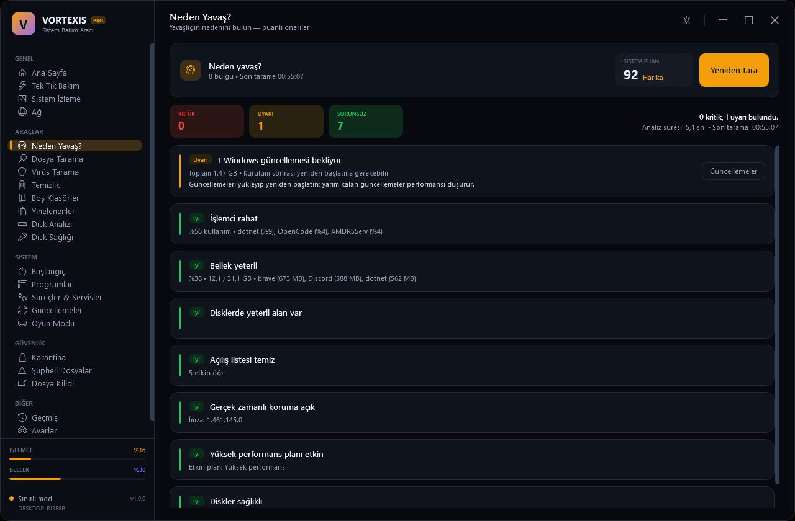
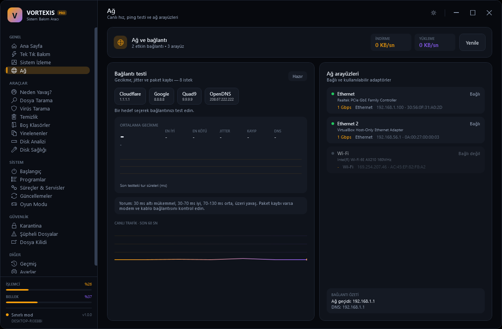
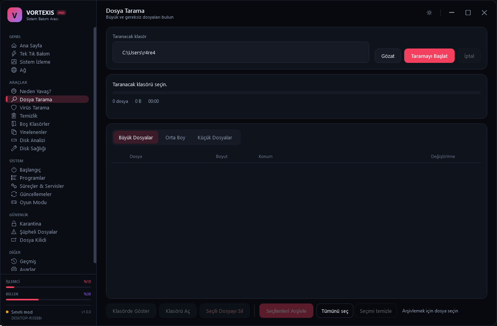

Akıllı bakım profilleri
Hızlı, dengeli ve derin profiller; geçici dosyalar, önbellekler, günlükler ve bozuk kayıtlar için farklı derinlik seviyeleri.
- İşlem öncesi önizleme
- Geri alma noktası
Vortexis, Windows bakımını bir dizi gizemli işlemden çıkarıp görünür, ölçülebilir ve geri alınabilir adımlara dönüştürür. İşte kutunun içindekiler.
Hızlı, dengeli ve derin profiller; geçici dosyalar, önbellekler, günlükler ve bozuk kayıtlar için farklı derinlik seviyeleri.
CPU, RAM, disk, ağ ve sıcaklık değerlerini gerçek zamanlı izleyin. Eşik değerleri aştığında görsel uyarı alın.
İndirme, yükleme, gecikme ve jitter ölçümü. Sonuçları geçmişle karşılaştırın, bağlantı değişimlerini görün.
Defender durumu, şüpheli dosya taraması ve karantina kayıtları. Ayrı bir antivirüs motoru kurmadan durum netliği.
Büyük dosyaları, yinelenenleri ve boş klasörleri bulun. Silmeden önce önizleyin; alanı bilinçli yönetin.
Oyun sırasında arka plan yükünü azaltın. Bildirimleri ve gereksiz süreçleri geçici olarak duraklatın.
Bakım, tarama ve hız testi sonuçlarını tek bir özet ekranında görün. İsterseniz dışa aktarın.
E-posta ve parola ile yerel hesap oluşturun. Oturum bilgisi ve ayarlar cihazınızda kalır.
Türkçe ve İngilizce dil desteği. Tüm ana ekranlar, bildirimler ve raporlar seçilen dilde görünür.
Vortexis her işlemi önce listeler, sonra uygular. Hangi dosyanın ne kadar alan kapladığını, hangi kayıt anahtarının neden işaretlendiğini görürsünüz. İstemediğiniz adımı tek tıkla atlarsınız.

Anlık metrikler, süreç bazlı kullanım ve sıcaklık eğilimleri. Bir uygulama diski doldurduğunda veya CPU beklenmedik şekilde yükseldiğinde haberdar olun.

İndirme ve yükleme hızı, gecikme ve jitter değerlerini tek akışta ölçün. Önceki sonuçlarla karşılaştırın; operatör değişikliğini veya Wi-Fi sorununu erken fark edin.

Windows Defender'ın durumunu, son tarama sonucunu ve karantina kayıtlarını tek yerden görün. Vortexis gerçek zamanlı koruma katmanı eklemez; mevcut korumanızı daha okunur hale getirir.

Vortexis bir bulut servisi değildir. Hesabınız, ayarlarınız ve tarama geçmişiniz cihazınızda kalır. E-posta doğrulama isteğe bağlıdır ve yalnızca sizin başlattığınız işlemlerde kullanılır.
Hesap ve ayarlar Windows kullanıcı profilinizde saklanır. Web demosunda tarayıcı yerel depolaması kullanılır.
Parolalar düz metin olarak tutulmaz. Yerleşik gönderici bilgisi DPAPI ile korunur; web demosunda PBKDF2-SHA256 kullanılır.
Giriş kayıtları varsayılan olarak kapalıdır. Etkinleştirilirse yalnızca yerel kullanıcı ve SYSTEM erişebilir.
Aynı işi yapmanın iki yolu. Biri dağınık araçlar ve tahminler; diğeri tek panel ve görünür adımlar.
| Yetenek | Manuel bakım | Vortexis |
|---|---|---|
| Tek panelden bakım | ||
| Canlı sistem metrikleri | ||
| Hız testi ve geçmiş | ||
| İşlem öncesi önizleme | ||
| Yerel hesap ve veri | ||
| TR / EN arayüz | ||
| Tek EXE kurulum |
| İşletim sistemi | Windows 10 21H2 / Windows 11 |
|---|---|
| Mimari | x64 |
| Disk alanı | ~250 MB |
| İzin | Yönetici (kurulum ve bakım) |